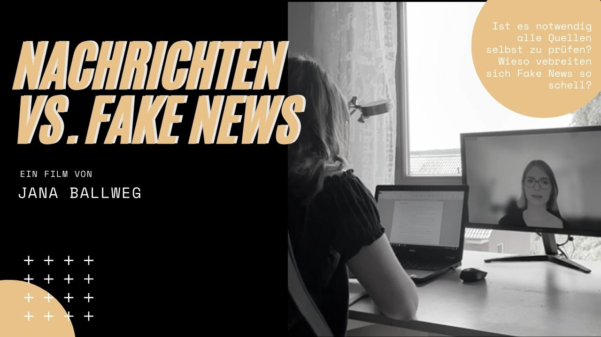
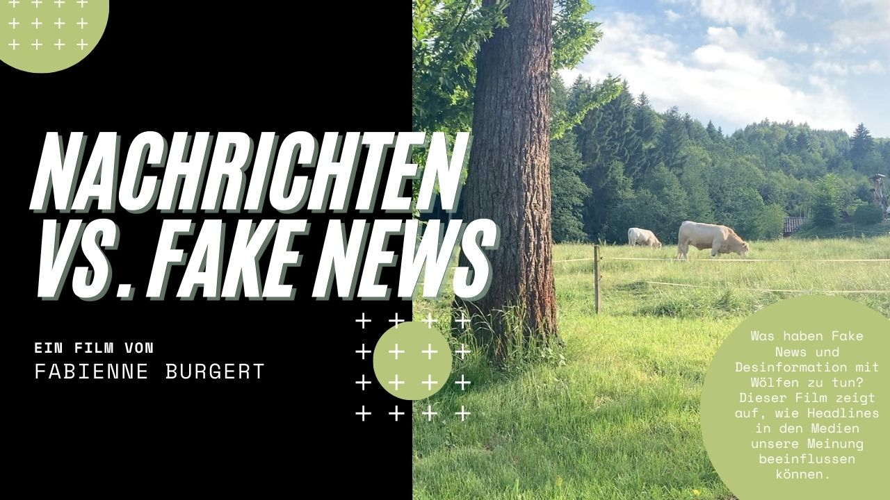
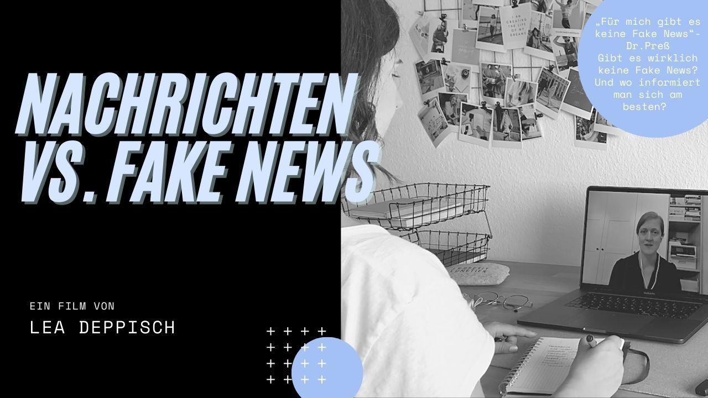
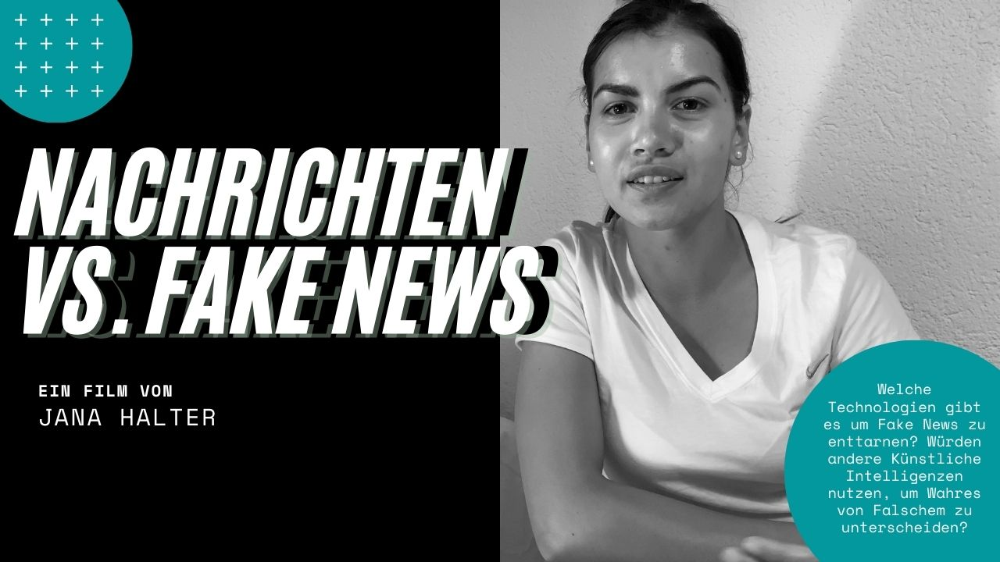
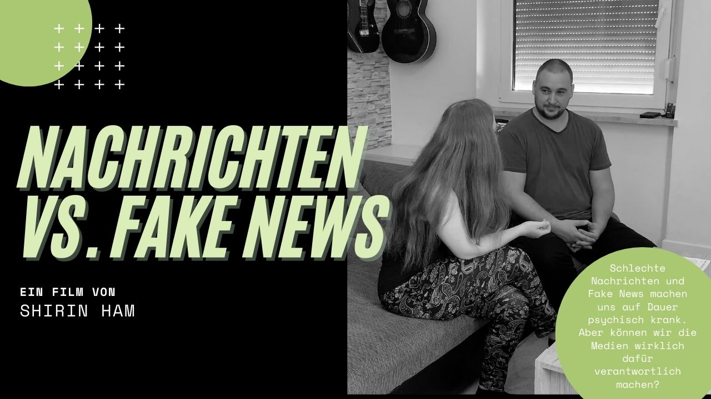
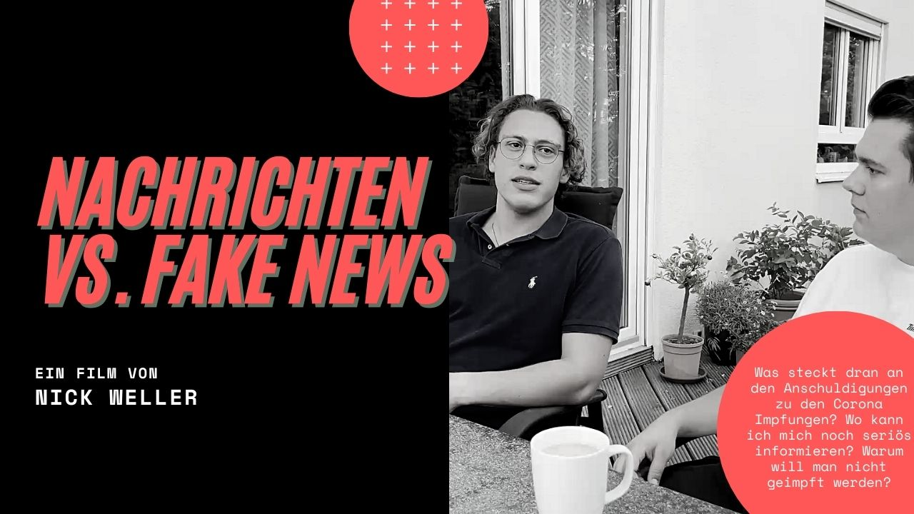

Unsere Filme
Ein Film von Jana Ballweg
Tausende Informationen prasseln jeden Tag auf uns ein. Informationen tausendfach, überall zu jeder Zeit. Früher laß man Zeitung und sah die Nachrichten im Fernsehen. Heute erreichen uns Informationen meistens ungefiltert. Was kann ich noch glauben? Wie kann ich Quellen überprüfen? Durch die fehlerhafte Verbreitung von Informationen über einen Feuerwehreinsatz und einige Aussagen meines Cousins Johannes weckt das Thema Interesse bei mir. Ich beschließe dem ganzen auf die Spur zu gehen. In einem Gespräch wirft der Antagonist Johannes, welcher als Lehrer tätig ist, viele Fragen bei mir und den Konflikt „Fake News“ auf. Was in den Nachrichten und im Netz berichtet wird sollte man so schnell nicht mehr glauben. Lieber immer die Quellen und Seriosität überprüfen. Grade Schüler sollten lernen welche Informationen vertrauenswürdig sind und welche nicht – Dabei liegt die Verantwortung oft bei den Lehrern. In der heutigen Zeit sei das Wichtigste Fake News erkennen zu können.
Doch ist dies alles wirklich so der Fall? Haben die Fake News so ein drastisches Ausmaß angenommen, so dass selbst die Lehrer in der Verantwortung liegen die Schüler zu befähigen Fake News von True News zu unterscheiden? Ist es wirklich notwendig die Quellen zu überprüfen? Wieso verbreiten sich Fake News so schnell, vor allem in den Sozialen Netzwerken? All diesen Fragen bin ich in einer Recherche unter anderem mithilfe der Expertin Frau Dr. Cornelia Sindermann auf die Spur gegangen. Was dabei rausgekommen ist – es bleibt spannend!

Ein Film von Fabienne Burgert

Der Wolf – ein Tier das einige nur durch Märchen aus der Kindheit kennen und nie selbst gesichtet haben. Bis vor ein paar Jahren war dies in Baden-Württemberg auch kaum möglich, denn erst seit 2015 siedeln diese sich zunehmend auch in diesem Bundesland an. Einem Teil der Bevölkerung passt dies allerdings überhaupt nicht. Sätze wie „Problemwölfe müssen entnommen werden!“ liest man nicht selten in den Medien. Doch Wolfexperten geben schon länger Entwarnung und berufen sich auf Zahlen, die zeigen, dass innerhalb der letzten 70 Jahren nur neun Todesfälle durch einen Wolfsangriff gab. Wie entstand also dieses Bild vom „Bösen Wolf“ den viele nicht in Deutschland zurückhaben wollen, wenn bei der richtigen Recherche bewiesen werden kann, dass die meisten Wölfe überhaupt kein Problem darstellen?
Dieser Film zeigt auf, wie unsere Emotionen und Meinungen durch Headlines und Artikel in den Medien gesteuert werden können, auch wenn diese Schlagzeilen eigentlich ein falsches Bild vermitteln. Oftmals wird nur eine Seite eines Konflikts beleuchtet und ein Teil der Wahrheit bleibt somit verborgen. Daraus entstehen schnell falsche Eindrücke, die rasch verbreitet werden und dazu führen, dass der wahre Teil immer kleiner wird. Ein Experte gibt Einblicke in das Phänomen „Fake News“ und klärt auf, wie man sich davor schützen kann und was eine gute Recherche ausmacht.
Ein Film von Lea Deppisch
Täglich prasseln Informationen über neue Geschehnisse in den unterschiedlichsten Medienkanälen auf uns ein und dabei fällt in Deutschland zumindest seit März 2020 auch vermehrt das Wort Fake News. Es ist Zeit aufzuklären und zu erforschen, warum das Potential für Fake News so groß ist und welche Ereignisse, wie z.B. eine solche Pandemie, den Journalismus erschüttern. In meinem Alltag denke ich an die Fake News Schlagzeile der Grünen Kanzler Kandidatin Annalena Baerbock: „Wir können allein durch den Wegfall der Hunde in Deutschland ca. 19 Millionen Tonnen Kohlenstoffdioxid einsparen […]“ und werde so wieder auf die Thematik der Fake-News aufmerksam. Ich werde nachdenklich und führe deshalb ein Gespräch mit der Chefin meiner Mutter Frau Dr. Preß. Sie schaut schon mehrere Jahre nur noch sehr begrenzt bürgerliche Nachrichten, wie z.B. die Tagesschau. Gegenüber Nachrichten ist sie sehr misstrauisch eingestellt, und versucht durch Eigenrecherchen sich selbst ein Bild von der Thematik zu machen. Ihre Aussagen motivieren mich, tiefer in die Thematik einzusteigen und zu recherchieren. Auf meiner Suche nach den richtigen Fakten ziehe ich die Expertin Frau Dr. Carolin Jansen hinzu. Sie war wissenschaftliche Mitarbeiterin im Projekt „DORIAN – Desinformation aufdecken und bekämpfen“. Und derzeit arbeitet sie u.a. für den Global Desinformation Index als Analystin im Bereich des Desinformationspotentials in der deutschsprachigen Medienlandschaft. Mit den Informationen, die ich mit ihrer Hilfe und die ich mit meiner Eigenrecherche herausgefunden habe, möchte ich Fr. Dr. Preß konfrontieren. Werde ich es schaffen, Frau Dr. Preß anhand nach meiner Recherche wieder mehr von bürgerlichen Nachrichten zu überzeugen? Doch wo liegt die Grauzone? Und wie können wir uns selbst helfen, um Fake News zu erkennen und aufzudecken?

Ein Film von Jana Halter

Fake News und das Verbreiten von falschen Nachrichten. Der Begriff ist vielen bekannt. Aber viele haben Probleme damit, falsche Nachrichten von richtigen zu unterscheiden. Heutzutage gibt es zwar Infografiken, Filme und Spiele um das Enttarnen von Fake News zu lernen, aber irgendwie muss man sich doch noch auf den eigenen, gesunden Menschenverstand verlassen, oder doch nicht? Um diese und noch viele weiteren Fragen zu beantworten, wird der Diplom Ingenieur Armin Kirchknopf interviewt. Er erzählt dabei von seinen Erfahrungen zum Thema Fake News und seinem Projekt, eine künstliche Intelligenz zum Enttarnen von Fake News zu entwickeln.
Wie unterscheiden andere Menschen falsche Nachrichten von wahren? Wie gehen sie mit dem Thema Fake News um? Dianne erzählt dabei von ihrer Geschichte rund um das Thema Fake News. Würde sie eine künstliche Intelligenz verwenden, um Fake News zu enttarnen?
Der Film soll Einblicke in die neuesten Technologien zum Thema Fake News geben und zeigen, wie unterschiedlich Personen mit dem Thema Fake News umgehen.
Ein Film von Shirin Ham
Vor ca. 11 Jahren hat der heute 35-jährige Tobias eine schwierige, beinahe depressive, Lebensphase durchgemacht, die sich über knapp 6 Jahre hinweg zog. Grund hierfür war die Überflut an negativen Nachrichten durch klassische Medien, vor allem durch das tägliche Radiohören auf dem Arbeitsweg. Geplagt von den andauernden negativen Schlagzeilen und auch der Manipulation der Journalisten in der Art ihrer Berichterstattung, die für Tobias zu Fake News dazuzählen, hat er den klassischen Medien nach vielen Jahren den Rücken zugewendet. Er beschafft sich seine News seither in den Sozialen Medien. Die Angst, dort auf Fake News zu stoßen und diese irreführenderweise für bare Münze zu nehmen, hat er nicht. Er fürchtet sich mehr davor, wieder durch klassischen Journalismus in einen depressiven Kreislauf zu geraten.
Ich möchte herausfinden, ob Tobias Ansichten mit ein Grund dafür sind, dass klassische Medien anscheinend immer mehr durch Kanäle wie Facebook, Instagram und YouTube zur Nachrichtenbeschaffung abgelöst werden – und ob diese Verdrängung tatsächlich der Wahrheit entspricht oder selbst eine Fake News ist. Hierzu wurde Dr. Lars Rinsdorf interviewt, Vorsitzender der Deutschen Gesellschaft für Publizistik und Kommunikationswissenschaft. Auf meiner Reise geben ich einen Einblick darüber, die der klassische und der digitale Journalismus ticken, wie sich das auf unsere Psyche auswirkt und was man dagegen tun kann.

Ein Film von Nick Weller

Immer mehr Menschen werden in Deutschland gegen Corona geimpft. Eine Impfung bietet dabei langfristig wohl den besten Schutz gegen das Sars-CoV-2 Virus. Damit schützt man sich nicht nur selbst, sondern auch andere vor einer Infizierung, die im Schlimmsten fall mit dem Tod enden kann. Doch während viele Bürger froh über den „erlösenden Stich“ sind, gibt es auch sehr laute Stimmen, die behaupten, der Impfstoff wäre nicht die Lösung des Problems, sondern das Problem selbst. Von Micro-Chips in den Impfdosen, Unfruchtbarkeit, purem Gift und vielem mehr ist die Rede. Doch stimmen diese Anschuldigungen eigentlich? Warum entscheidet man sich aktiv gegen eine Impfung?
In diesem Film möchte ich genau diese Fragen beantworten. Dazu befragen wir Niklas über seine Beweggründe und Befürchtungen gegenüber den Corona-Impfungen und befragen den Allgemeinmediziner Herr Dr. med. Hechelmann was an diesen Anschuldigungen wirklich dran ist und wo man sich noch seriös informieren kann.